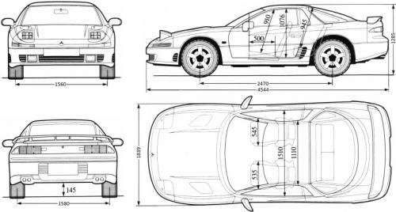

About the Mitsubishi 3000GT
The Mitsubishi 3000GT, also known as the GTO in Japan, is a sports car produced by Mitsubishi Motors between 1990 and 2001. It was known for its advanced technology and performance capabilities.
History
The 3000GT was introduced in 1990 and quickly gained popularity for its sleek design and powerful engine options. It featured advanced technologies such as all-wheel drive, active aerodynamics, and electronically controlled suspension. The Mitsubishi 3000GT was made with the goal of becoming the flagship model for the company, replacing the older Starion Mitsubishi. It was aimed to compete against other Japanese sports cars like the Mazda RX-7, Nissan 300ZX, Honda NSX, Subaru SVX, and Toyota Supra.

Design
The 3000GT featured a sleek and aerodynamic design, with pop-up headlights, a long hood, and a distinctive rear wing. It was available in coupe and convertible body styles, with a focus on performance and handling. The interior of the 3000GT was designed for driver comfort and convenience, with features such as leather seats, power windows, and a premium sound system.
Technical Specifications
- Engine: 3.0L V6
- Horsepower: 222-320 hp
- Transmission: 5-speed manual, 6-speed manual, 4-speed automatic
- Drivetrain: Front-engine, all-wheel drive
Model Variations
The 3000GT was available in several variations, including the base model, SL, VR-4, and special editions such as the Spyder convertible.
- Base Model: 3.0L V6 engine.
- SL Model: Offering more luxury features and a better engine.
- VR-4 Model: High-performance version with a twin-turbocharged engine, all-wheel drive, and all-wheel steering.
- Spyder Convertible: A retractable hardtop variant available in the mid-1990s.